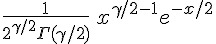
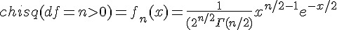
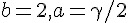

卡方分布 (Chi-Square distribution)
公式： 
R 的公式： 
Ｒ函數：chisq(df=n, ncp=λ)
- 公式： f(x) = exp(-λ/2) SUM_{r=0}^∞ ((λ/2)^r / r!) dchisq(x, df + 2r)
- 網址：http://stat.ethz.ch/R-manual/R-patched/library/stats/html/Chisquare.html
特性
卡方分配主要用途是在「利用樣本推斷母體變異數」時使用的。
卡方分配是伽瑪分布的特例，只要將 Gamma 分配中設定  就是卡方分布了。
R 程式範例
op=par(mfrow=c(2,2))
curve(dchisq(x, 1), 0, 100)
curve(dchisq(x, 5), 0, 100)
curve(dchisq(x, 10), 0, 100)
curve(dchisq(x, 50), 0, 100)
R 程式範例二
dchisq(1, df=1:3)
pchisq(1, df= 3)
pchisq(1, df= 3, ncp = 0:4)# includes the above
x <- 1:10
## Chi-squared(df = 2) is a special exponential distribution
all.equal(dchisq(x, df=2), dexp(x, 1/2))
all.equal(pchisq(x, df=2), pexp(x, 1/2))
## non-central RNG -- df=0 with ncp > 0: Z0 has point mass at 0!
Z0 <- rchisq(100, df = 0, ncp = 2.)
graphics::stem(Z0)
## Not run: ## visual testing
## do P-P plots for 1000 points at various degrees of freedom
L <- 1.2; n <- 1000; pp <- ppoints(n)
op <- par(mfrow = c(3,3), mar= c(3,3,1,1)+.1, mgp= c(1.5,.6,0),
oma = c(0,0,3,0))
for(df in 2^(4*rnorm(9))) {
plot(pp, sort(pchisq(rr <- rchisq(n,df=df, ncp=L), df=df, ncp=L)),
ylab="pchisq(rchisq(.),.)", pch=".")
mtext(paste("df = ",formatC(df, digits = 4)), line= -2, adj=0.05)
abline(0,1,col=2)
}
mtext(expression("P-P plots : Noncentral "*
chi^2 *"(n=1000, df=X, ncp= 1.2)"),
cex = 1.5, font = 2, outer=TRUE)
par(op)
## End(Not run)
## "analytical" test
lam <- seq(0,100, by=.25)
p00 <- pchisq(0, df=0, ncp=lam)
p.0 <- pchisq(1e-300, df=0, ncp=lam)
stopifnot(all.equal(p00, exp(-lam/2)),
all.equal(p.0, exp(-lam/2)))執行結果：
> dchisq(1, df=1:3)
[1] 0.2419707 0.3032653 0.2419707
> pchisq(1, df= 3)
[1] 0.198748
> pchisq(1, df= 3, ncp = 0:4)# includes the above
[1] 0.19874804 0.13229855 0.08787311 0.05824691 0.03853592
>
> x <- 1:10
> ## Chi-squared(df = 2) is a special exponential distribution
> all.equal(dchisq(x, df=2), dexp(x, 1/2))
[1] TRUE
> all.equal(pchisq(x, df=2), pexp(x, 1/2))
[1] TRUE
>
> ## non-central RNG -- df=0 with ncp > 0: Z0 has point mass at 0!
> Z0 <- rchisq(100, df = 0, ncp = 2.)
> graphics::stem(Z0)
The decimal point is at the |
0 | 0000000000000000000000000000001122334455668903344577888899999
2 | 1345667788899234689
4 | 14813556
6 | 2477733
8 | 047
10 | 3
12 |
14 |
16 | 6
>
> ## Not run: ## visual testing
> ## do P-P plots for 1000 points at various degrees of freedom
> L <- 1.2; n <- 1000; pp <- ppoints(n)
> op <- par(mfrow = c(3,3), mar= c(3,3,1,1)+.1, mgp= c(1.5,.6,0),
+ oma = c(0,0,3,0))
> for(df in 2^(4*rnorm(9))) {
+ plot(pp, sort(pchisq(rr <- rchisq(n,df=df, ncp=L), df=df, ncp=L)),
+ ylab="pchisq(rchisq(.),.)", pch=".")
+ mtext(paste("df = ",formatC(df, digits = 4)), line= -2, adj=0.05)
+ abline(0,1,col=2)
+ }
> mtext(expression("P-P plots : Noncentral "*
+ chi^2 *"(n=1000, df=X, ncp= 1.2)"),
+ cex = 1.5, font = 2, outer=TRUE)
> par(op)
> ## End(Not run)
>
> ## "analytical" test
> lam <- seq(0,100, by=.25)
> p00 <- pchisq(0, df=0, ncp=lam)
> p.0 <- pchisq(1e-300, df=0, ncp=lam)
> stopifnot(all.equal(p00, exp(-lam/2)),
+ all.equal(p.0, exp(-lam/2)))
>